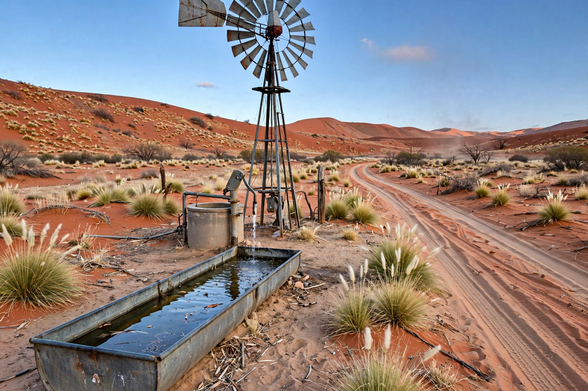

[Image placeholder: A well on the Canning Stock Route, in the Western Desert]The **Canning Stock Route** is a historic track in Western Australia running roughly 1,850 km from Halls Creek in the Kimberley southwest to Wiluna, crossing the Great Sandy, Gibson and Little Sandy deserts. Surveyed by Alfred Canning in 1906–07 and opened in 1910, it was built to bring Kimberley cattle south to the goldfields markets, breaking the east Kimberley tick quarantine monopoly — at the cost of violent conflict with the desert's Aboriginal owners, whose water sources (the route's chain of 51 wells) were seized and whose people were coerced into guiding survey parties.
Droving along the route was sporadic and dangerous; the last commercial drive was in 1959. Today the Canning is one of the world's great remote four-wheel-drive adventures, taking two to three weeks with fuel drops, and its wells and story feature in major Aboriginal art and history projects (notably the Yiwarra Kuju exhibition). It remains one of the longest historic stock routes in the world.
Canning's treatment of Aboriginal people — chaining and violence documented at the 1908 Royal Commission — makes the route a contested heritage: a feat of endurance built on dispossession. Martu and other desert groups now run ranger programmes and cultural tourism along it.